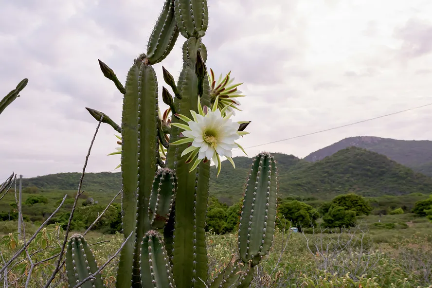
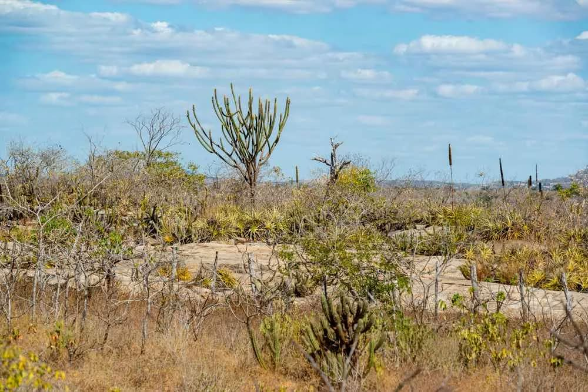
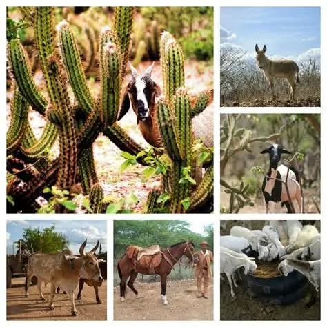
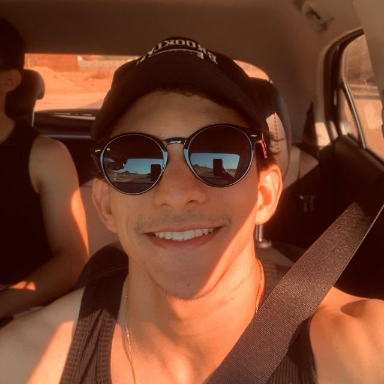

9 espécies
Uma amostra para começar a explorar.
A Caatinga tem histórias em cada espinho, asa e raiz. O Discovery Caatinga Go aproxima você desse universo com conhecimento, curiosidade e aprendizado.
Uma amostra para começar a explorar.
Plantas, animais, aves e répteis.
Um convite para voltar e aprender.

✳ DESCOBERTA DE HOJEESPÉCIE EM DESTAQUE
Uma descoberta diferente para conhecer melhor a biodiversidade do bioma.
Uma experiência educativa pensada para aproximar pessoas da biodiversidade e despertar o interesse por um dos biomas mais singulares do Brasil.

É um aplicativo educativo que conecta tecnologia e educação ambiental. Nele, o usuário pode explorar espécies, descobrir curiosidades, estudar conteúdos e testar o que aprendeu.
A proposta é tornar o conhecimento sobre a Caatinga mais simples, acessível e interessante, valorizando a biodiversidade e incentivando sua preservação.
Explore espécies e seus detalhes.
Transforme curiosidade em conhecimento.
Reconheça o valor da vida no bioma.
Conhecimento apresentado de um jeito leve, visual e interativo. Explore os recursos e veja como cada parte pode ajudar na sua jornada.
Navegue pelo catálogo, explore categorias e encontre informações sobre plantas, animais, aves e répteis. A busca ajuda você a chegar mais rápido ao que deseja conhecer.
Conheça algumas espécies presentes no acervo ilustrativo do aplicativo. Toque em um cartão para descobrir um pouco mais.
Vire duas cartas por vez e encontre os pares de espécies da Caatinga. Ao terminar a rodada, embaralhe para jogar novamente.
Encontre os 8 pares para completar a rodada.
Explore a arena, colete frutos e dispute o topo contra 10 cobras controladas pelo computador — sem internet e sem servidores.
Mouse: a cobra vira suavemente na direção do cursor.
Teclado: setas ou W, A, S, D. Celular: arraste na arena ou toque nas setas.
Colete frutos; evite as bordas e os corpos. Cobras eliminadas deixam alimento.

Além de explorar espécies, o aplicativo reúne conteúdos educativos para ampliar o entendimento sobre o bioma e seus seres vivos.
Avance por conteúdos organizados em lições sobre a Caatinga, biodiversidade, adaptações e conservação.
Responda aos quizzes e use as perguntas como oportunidade para revisar e fixar conhecimentos.
Consulte seu avanço nas atividades disponíveis e retome sua experiência de aprendizagem.
Uma demonstração em vídeo pode mostrar os caminhos, os detalhes e a experiência real de uso do aplicativo.
Demonstração do aplicativo
Vídeo local do app Discovery Caatinga Go.
O aplicativo foi estruturado como um projeto Android. Veja uma visão geral de sua construção e dos elementos que dão vida à experiência.
O projeto enviado contém código Java, interfaces XML e recursos visuais para construir as telas e a navegação do aplicativo.
Layouts e componentes organizam as informações, os cartões de espécies, as áreas de aprendizagem e os controles de navegação.
Os recursos se complementam: pesquisar, conhecer detalhes, guardar favoritos e avançar pelos conteúdos educativos.
Na versão analisada, o aplicativo utiliza Java e layouts XML, com componentes AndroidX e Material. A configuração inclui recursos para interface e persistência local. A composição exata pode variar conforme a versão do código.
Representação conceitual para facilitar a compreensão, não um diagrama completo de arquitetura interna.
O Discovery Caatinga Go é um projeto desenvolvido por estudantes, unindo tecnologia, criatividade e interesse pela natureza.

Desenvolvedor do Discovery Caatinga Go, projeto educativo sobre a biodiversidade e a conservação do bioma Caatinga.
@pdro.mdrs ↗Desenvolvedor do Discovery Caatinga Go, projeto educativo sobre a biodiversidade e a conservação do bioma Caatinga.
@kaike_mdrs ↗Orientador do projeto, desenvolvido no contexto da disciplina de Tópicos Especiais em Informática.
@alexandrecostapb ↗Algumas respostas para começar sua experiência.
É um aplicativo educativo que apresenta espécies e conteúdos sobre a Caatinga, com recursos para explorar, aprender e testar conhecimentos.
Para estudantes, professores, pesquisadores e qualquer pessoa interessada em conhecer a biodiversidade e a conservação da Caatinga.
Na área de espécies, utilize as categorias e a busca disponíveis para localizar o conteúdo desejado. Os nomes e opções podem variar conforme a versão do aplicativo.
O aplicativo reúne módulos, lições e quizzes. Explore a área de aprendizagem para consultar os conteúdos e responder às atividades disponíveis.
Alguns conteúdos locais podem funcionar sem conexão. O funcionamento exato depende da versão instalada.
Baixe o APK de testes na seção de download deste site. A instalação é destinada a dispositivos Android.
Baixe o aplicativo e explore espécies, conteúdos e atividades educativas no seu dispositivo Android.
DOWNLOAD DIRETOBaixar APKPara Android APK de testes · Aproximadamente 14 MB · AndroidConheça, valorize e preserve a riqueza de um bioma que faz parte da nossa história.
Voltar ao início ↑